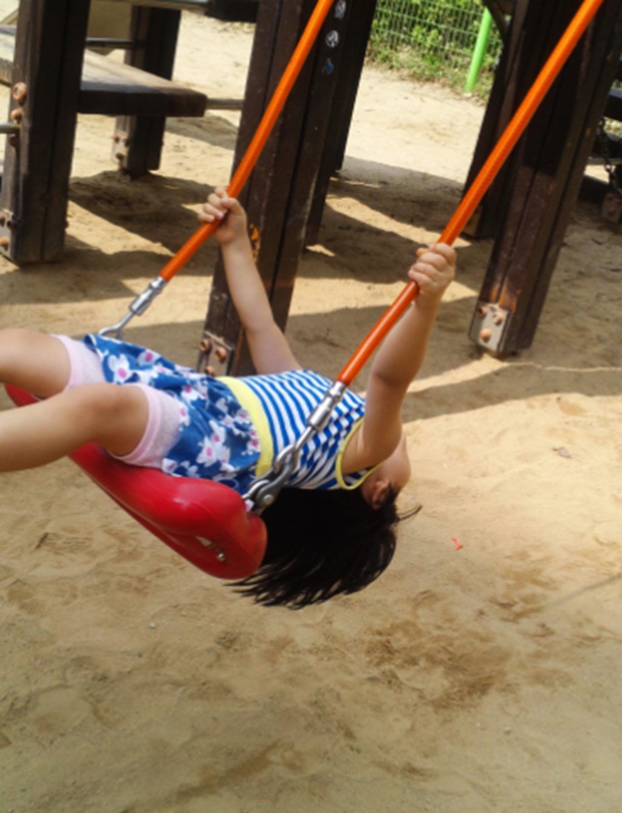
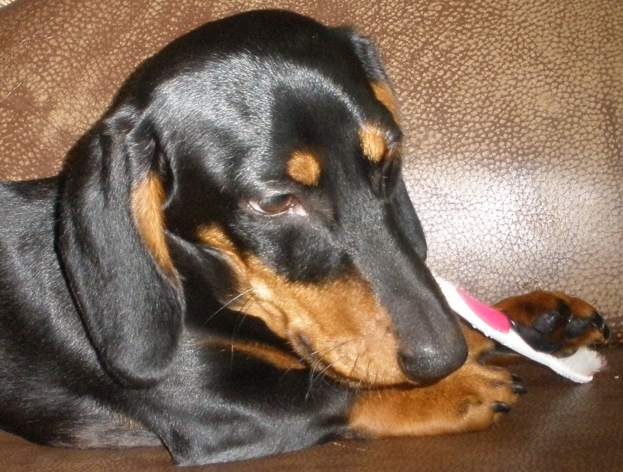
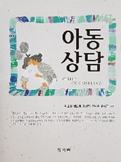

행동주의 상담은 내담자를 둘러싼 인간의 사고, 정서, 행동의 자극과 반응 간의 연결을 통한 조건형성에 관심을 갖는다. 이러한 조건형성 과정에서 잘못 형성된 습관이 환경의 규범이나 가치와 부조화할 때 나타나는 행동양상이기 때문이므로 바람직한 행동이 획득되고 유지되도록 한다(강정원 외, 2014; 정문자 외, 2013; 하승민 외, 2012). 행동주의 상담은 고전적 조건형성 원리에 입각한 체계적 둔감법. 혐오치료， 조작적 조건형성 원리에 입각한 토큰경제， 행동조성, 타임아웃， 그리고 사회학습 원리에 입각한 모델링 등이 사용된다.
행동주의 상담에서 사용되는 기법을 아동상담 중심으로 살펴보면 다음과 같다.

1. 체계적 둔감법
체계적 둔감법(sysrematic desensitization)은 단계적 둔화법이라고도 한다. 제이콥슨(Jacocobson, 1938)이 최초로 제안한 이후 월프(Wolpe，1958)에 의해 발달되었다. 아동의 정보를 토대로 불안을 유발하는 가장 약한 자극에서부터 가장 강한 자극까지 강도나 빈도 면에서 위계적 순서로 배열한다. 불안과 양립할 수 없는 이완반응을 낸 다음 불안을 유발시키는 경험을 상상하면 불안이나 공포를 점진적으로 극복하거나 불안 유발 자극의 위력이 약화된다(이장호, 2006).
이러한 자극 상황에 대해서 아동이 심한 불안을 일으키면 다시 이완 상태로 유도하여 불안을 느끼지 않을 때까지 이완시키는 과정을 반복하여 둔감하게 되면 치료가 종결된다. 이러한 과정에서 아동에게 불안을 일으킬 수 있으므로 상담자의 주의깊은 감독이 요구된다. 체계적 둔감법은 행동주의 상담기법 중 가장 대표적으로 효과가 검증되어 자주 사용되는 기법으로 고소공포증, 시험불안， 특정 동물에 대한 두려움, 대인관계 공포증을 치료하는 데 효과적이다.

2. 혐오치료
혐오치료(aversive technique)는 아동에게 불쾌하거나 고통스러운 자극을 제공하여 바람직하지 않은 행동을 제거하는 방법이다. 아동이 부적응 행동을 하려고 할 때마다 고통스러운 자극이 연상되어 부적응 행동을 하지 못하도록 만든다. 혐오 치료는 자폐증아동의 문제행동을 제거하는데 유용하다.
혐오자극으로 가장 흔하게 사용하는 내재적 기법(covert therapy)은 아동에게 문제 행동에 따르는 매우 불쾌한 결과를 상상하도록 함으로써 조건화시키는 방법이다. 즉, 구토제, 타임아웃， 벌， 시각물 등이 있다. 그러나 아동에게 신체적으로 고통스럽고 혐오스러운 자극을 제공하기 때문에 다소 비윤리적이라는 지적을 받고 있다.
3. 토큰경제
토큰경제(token economy)는 아동이 적절한 행동을 했을 경우 토큰을 제공하고, 토큰이 일정량 모여지면 아동이 원하는 특권(화장실 청소를 안하기, 휴가 가기, 옷이나 용돈 등)을 물건과 교환할 수 있다. 바람직한 행동에 대한 정적강화를 제공(티켓, 점수, 차트에 표시 등)해 주어 효과적인 행동을 증진하는데 기반을 둔다.
아동이 희망하는 물건이나 권리 강화물로 토큰(token)을 주어 먼저 강화하고자 하는 목표행동을 구체적으로 설정한 이후 합당한 행동을 실천했을 때 강화물을 제공한다. 토큰으로 대체할 수 있는 후속 강화물의 종류와 양은 아동의 발달수준과 행동 특성에 따라 조율할 수 있다.
이러한 토큰경제는 부적응 행동을 감소시키는 데 매우 효과적인 방법으로써 토큰을 모으는 과정에서 욕구와 만족을 지연시킬 뿐만 아니라 즉각적인 보상을 주거나 소거에 비교적 쉽기 때문에 광범위하게 사용하고 있다.
4. 행동조성
행동조성(shaping)은 복잡하거나 습득하기 어려운 행동을 여러 단계로 구분하여 조금씩 습득하게 함으로써 점진적으로 최종목표를 습득하여 바람직한 행동을 하도록 유도하는 방법이다. 이 방법은 작은 단계로 세분화하여 바람직한 행동이 계속될 때마다 보상(compensation)을 주면 그 행동의 습득이 용이할 뿐 아니라 습득 자체가 다음 행동에 대한 긍정적 강화(positive reinforcement)로 작용하므로 강화의 원리를 사용한다.
행동조성은 아동의 행동을 작은 단위로 나누어 조금씩 성취하여 최종적 행동까지 성취하도록 한다. 행동조성이 효과적이려면 각 단계별로 바람직한 행동이 발생할 때마다 즉시 충족시켜줘야 한다. 보상에는 사회적 욕구를 충족시켜 주는 외적보상(사탕, 돈, 스티커, 장난감 등)과 생리적 욕구를 충족시켜 주는 내적보상(칭찬과 격려, 미소, 인정 등)을 함께 주는 것이 효과적이다.
5. 모델링
모델링(modeling)은 내담자에게 배워야 할 바람직한 행동을 직접 보여주고, 관찰하고 반복해서 연습하도록 함으로써 바람직한 행동을 증가하도록 유도하는 방법이다. 아동으로 하여금 바람직한 행동을 관찰하고 반복해서 모방(imitative) 뿐만 아니라 그러한 행동을 통해 어떠한 긍정적인 결과가 나타나는지 학습할 수 있다.
모델링은 상담자가 아동에게 주변 사람이나 TV, 책， 비디오， 영화 등 대중매체를 이용하여 보여주어 학습할 수 있도록 한다. 모델링을 사용할 때 아동에게 충분한 모델링 기법과 경험에 의하여 연습의 기회를 제공하고 이에 대해 적절한 피드백을 주어야 한다.
이 밖에도 행동주의 상담 원리를 적용하여 외상 사건(traumatic event)으로 유발된 아동의 불안증상을 감소시키는 안구운동에 의한 둔감화와 재처리(Eye Movement Desentizalion and Reprocessing: EMDR) 치료도 실시하고 있다.
그러나 행동주의 상담은 아동의 심리내적 욕구나 정서를 간과하거나 부모와 자녀관계 측면에 대한 개입이 제한적일 수 있으며 혐오기법이나 처벌을 아동에게 사용하는 경우 다소 비윤리적일 수 있음을 고려해야 한다.

참고문헌
강정원, 홍기묵, 안지영(2014). 영유아교사를 위한 아동상담. 정민사.
정문자, 제경숙, 이혜란, 신숙재, 박진아(2013). 아동심리상담. 양서원.
박순길,권순황,김현진,선애순,한재금(2017). 아동상담, 양서원.
이장호(2006). 상담심리학의 기초. 학지사.
하승민, 서지영, 강현아, 미주리, 서혜전, 장정백(2012). 아동상담. 공동체.
2022.05.17 - [이론] - 반두라의 발달이론 - 사회적 관계를 위한 모방학습
반두라의 발달이론 - 사회적 관계를 위한 모방학습
인간의 모든 행동은 관찰이나 모방을 통한 학습 인간이 어떤 행동을 학습하는 데 있어서 외부로부터의 자극뿐 만 아니라 인간 내부의 인지적 요인이 함께 작용하여 학습이 진행된다는 것이다.
think-sis.co.kr